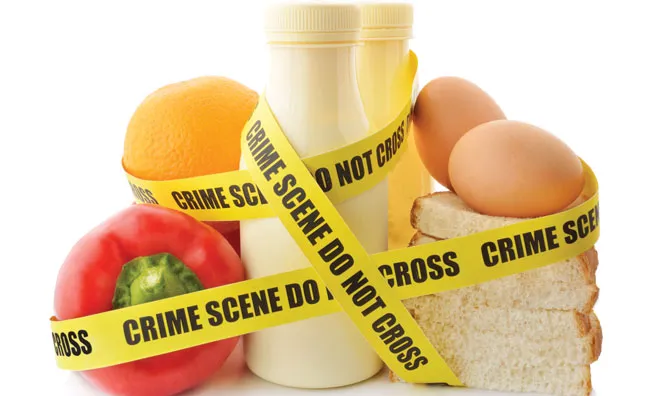

Bases de sécurité alimentaire

Sommaire
L'intoxication alimentaire
La température des installations frigorifiques
Les contrôles à la réception des marchandises
Les opérations de nettoyage et de désinfection
Le refroidissement rapide
Sécurité alimentaire ?
Enjeu de
santé publique
Enjeu
économique et social
Enjeu
environnemental
L'enjeu de santé publique
Le paquet
hygiène
Garantir un niveau élevé de protection des consommateurs
Harmoniser les système de surveillance
Permettre la libre circulation des produits
L'intoxication alimentaire
Symptômes
Fièvre
Vomissement
Douleurs abdominales
Crampes, diarrhées
Toxi-infection
alimentaire
Agent pathogène
Bactérie, virus, parasite
Maladie infectieuse et accidentelle
Aliment contaminé (dont boisson)
La population bactérienne double environ toutes les 20 minutes à température ambiante
Prolifération bactérienne
Ralentie sous température controlée
La congélation ne tue pas les bactéries ...
... contrairement à une température supérieure ou égale à 63°C
Température des installations frigorifiques
Entreposer les denrées alimentaires à la bonne température
La température dépend du contenu du frigo
(poisson, viande)
S'assurer du bon fonctionnement des frigos/congélateur
Enregistrement !
2 fois par jour minimum
Se baser sur un thermomètre à l'intérieur de l'enceinte
Conserver une traçabilité
Contrôles à la réception des marchandises
Suivre la qualité des denrées réceptionnées
Attester de leur état en cas de retour
Conserver une traçabilité
Nettoyage et désinfection
Permet de faciliter l'entretien de la cuisine
Suit un planning strict avec des fréquences définies en fonction des surfaces/machines etc
Prend en compte la particularité des locaux de chaques entreprises (un plan = une entreprise)
Refroidissement rapide
Empêche la prolifération des bactéries lors du passage sous 63°C
Allonge la durée de vie des produits (moins d'altération)
Enregistrement de la température au début du refroidissement (passage sous 63°C)
Durée maximum de 2h pour atteindre 10°C ou en dessous
Sinon ... destruction
Merci pour votre attention !